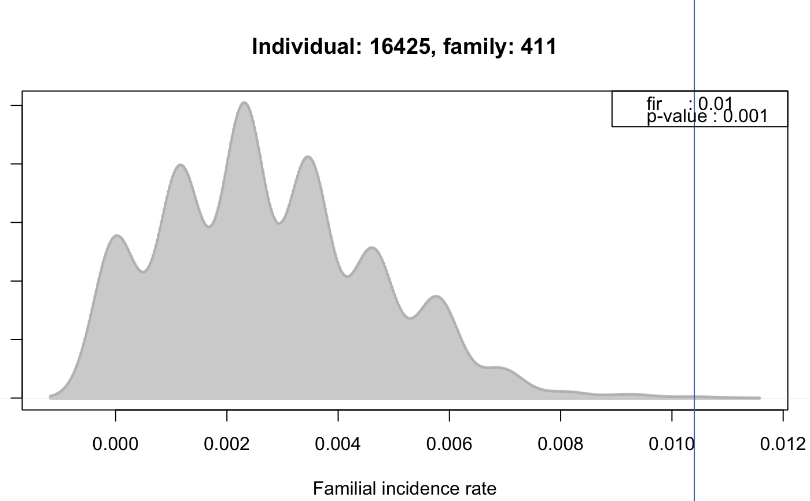

FAIncidenceRateResults.RdThe FAIncidenceRateResults object contains the results from a
familial incidence rate calculation employing in addition Monte Carlo
simulations to assess significance levels for the familial incidence
rate of each individual.
The familial incidence rate (FIR, also referred to as FR in Kerber
(1995)) is an estimate for the risk per gene-time for each individuals
for a certain disease given the disease experience in the cohort. The
measure considers the kinship of each individual with any affected
individual in the pedigree and the time at risk for each.
Note that in contrast to e.g. FAKinSumResults a familial
incidence rate and corresponding p-value are calculated and available
for all individuals in the pedigree, not only for affected individuals.
# S4 method for FAIncidenceRateResults familialIncidenceRate(object, trait=NULL, timeAtRisk=NULL, ...) # S4 method for FAIncidenceRateResults plotPed(object, id=NULL, family=NULL, filename=NULL, device="plot", only.phenotyped=FALSE, ...) # S4 method for FAIncidenceRateResults plotRes(object, id=NULL, family=NULL, addLegend=TRUE, type="density", ...) # S4 method for FAIncidenceRateResults result(object, method="BH") # S4 method for FAIncidenceRateResults runSimulation(object, nsim=50000, timeAtRisk=NULL, strata=NULL, ...) # S4 method for FAIncidenceRateResults timeAtRisk(object) # S4 method for FAIncidenceRateResults timeAtRisk(object) <- value # S4 method for FAIncidenceRateResults trait(object) <- value
| addLegend | For |
|---|---|
| device | For |
| family | For |
| filename | For |
| id | For |
| method | The multiple hypothesis testing method. All methods supported by
|
| nsim | Number of simulations. |
| object | The |
| only.phenotyped | For |
| strata | For |
| timeAtRisk | For |
| trait | For |
| type | For |
| value | For |
| ... | For For |
FAIncidenceRateResults objects are created by the
familialIncidenceRateTest method on a
FAData object.
Class FAData directly.
Number of simulations.
The result of the simulation. This slot should not be accessed
directly, use the result method to extract result
information.
Numeric vector with the time at risk for each individual. Use the
accessor method timeAtRisk or use object$tar to
extract this data.
Access the familial incidence rate using object$fir, the
(raw) p-value from the simulation using object$pvalue and the
time at risk for each individual using object$tar or
object$timeAtRisk with object being the
FAIncidenceRateResults object.
Returns the familial incidence rate values calculated by a call to
the runSimulation method or
familialIncidenceRate method on a
FAData object. In contrast to that latter method,
which directly calculates the values, this method returns the
values from a calculation stored inside the
FAIncidenceRateResults object. The method returns a named numeric vector with the familial
incidence rates for all individuals in the pedigree, the names
being the ID of the individuals. Singletons as well as individuals
that, after removing not phenotyped individuals or individuals
without time at risk, do not share kinship with any other
individual in the pedigree have a value of NA.
Plots a pedigree for one of the affected individuals in the
simulation results. The id of the selected affected individual
(specified with argument id) is highlighted in red. The
familial incidence rate value for each individual is drawn below
the individual's id.
See plotPed for more details.
Plots the distribution of expected familial incidence rates calculated for the selected individuals from Monte Carlo simulations along with the actually observed familial incidence rate.
Returns the result from the simulation as a data.frame with
columns: "trait_name": the name of the trait. "total_phenotyped": total number of phenotyped individuals in
the trait. "total_affected": total number of affected individuals in the
trait. "total_tested": the number of individuals in the pedigree
considered for the simulation. This corresponds to all individuals
with valid, non-NA, values in trait, timeAtRisk and eventually
strata. "id": the id of the individual. "family": the family id. "fir": the familial incidence rate. Note that this will be NA for all non-phenotyped individuals and singletons in the pedigree as well as for
individuals that do not share kinship with at least one other
phenotyped individual with valid time at risk (or valid value in
parameter strata). "pvalue": the p-value for the significance of the familial
incidence rate assessed by Monte Carlo simulations. "padj": the p-value adjusted for multiple hypothesis
testing (with the method specified with argument method). The returned data.frame is sorted by column
"pvalue", its row names correspond to column
"id".
Performs the simulation analysis based on the pedigree and trait
information stored in the object as well as the time at risk
provided with argument timeAtRisk.
Returns a FAIncidenceRateResults object with the results
from the simulation.
Set the trait information. This method will reset all simulation
results saved in the sim slot.
Monte Carlo simulation and empirical p-value estimation: the background distribution to calculate the p-value for a familial incidence rate (FIR) is determined by randomly sampling N affected individuals (N being the number of affected) and calculating the expected FIR for all individuals in each simulation iteration. The p-value for an individual represents thus the number of times an expected FIR for that individual from the simulation was found to be larger than or equal to the observed FIR divided by the number of iterations.
Calling the runSimulation method on a FAIncidenceRateResults
object is the same as calling the
familialIncidenceRateTest on a
FAData object. In the first case the simulation
is performed using the trait information data stored internally in the
object, while in the latter case the trait information have to be
submitted to the function call.
By providing argument strata, the stratified random sampling is
performed. See example below and the details section in
PedigreeAnalysis for more details.
The familial incidence rate can also be directly calculated, without
simulation, using the familialIncidenceRate method of a
FAData object.
A call to the setter methods trait<- resets any simulation
results present in the sim slot, thus, the object can be
re-used to perform a simulation analysis using the new trait data.
By default the Monte Carlo p-value estimation in the
runSimulation method is quite memory demanding. For very large
pedigrees the optional argument lowMem=TRUE might be passed to
the method which results in faster and less memory demanding
calculations. This will however disable the plotRes method on
the resulting FAIncidenceRateResults as the distribution of
familial incidence rates from the simulation runs is no longer
reported.
Note: the FIR for singletons and individuals that do not share kinship
with at least one other phenotyped individual that has also a valid
value in argument timeAtRisk (and eventually strata)
will be NA.
Subsetting (using the [ operator) is not supported.
Refer to the method and function description above for detailed information on the returned result object.
Kerber, R.A. (1995) Method for calculating risk associated with family history of a disease. Genet Epidemiol, pp 291--301.
FAData,
kinship,
trait,
probabilityTest,
kinshipGroupTest,
kinshipSumTest,
genealogicalIndexTest,
familialIncidenceRateTest,
fsirTest,
plotPed,
estimateTimeAtRisk
########################## ## ## Perform the simulation analysis ## ## Load the test data. data(minnbreast) ## Subset to some families and generate a pedigree data.frame. mbsub <- minnbreast[minnbreast$famid == 4 | minnbreast$famid == 5 | minnbreast$famid == 6 | minnbreast$famid == 7 | minnbreast$famid == 411, ] PedDf <- mbsub[, c("famid", "id", "fatherid", "motherid", "sex")] colnames(PedDf) <- c("family", "id", "father", "mother", "sex") ## Generate the FAData. fad <- FAData(pedigree=PedDf)#>#>## Specify the trait. tcancer <- mbsub$cancer names(tcancer) <- mbsub$id ## Spefify the "time at risk"; we are using column "endage" tar <- mbsub$endage ## Perform the simulation test: far <- familialIncidenceRateTest(fad, trait=tcancer, traitName="cancer", timeAtRisk=tar, nsim=1000)#>#>#>#>#>#>#>#>#> trait_name total_phenotyped total_affected total_tested id family #> 16425 cancer 131 12 73 16425 411 #> 16424 cancer 131 12 73 16424 411 #> 16416 cancer 131 12 73 16416 411 #> 16421 cancer 131 12 73 16421 411 #> 16426 cancer 131 12 73 16426 411 #> 16423 cancer 131 12 73 16423 411 #> fir pvalue padj #> 16425 0.010402690 0.001 0.04380000 #> 16424 0.010525802 0.002 0.04380000 #> 16416 0.010189687 0.003 0.04380000 #> 16421 0.010085401 0.003 0.04380000 #> 16426 0.008833302 0.003 0.04380000 #> 16423 0.008211856 0.005 0.06083333#> 1 2 3 4 5 6 #> NA 0.002278208 0.002365165 0.000670492 0.002709228 0.002098398#> 1 2 3 4 5 6 #> NA 0.002278208 0.002365165 0.000670492 0.002709228 0.002098398#> 1 2 3 4 5 6 #> NA 0.589 0.573 0.948 0.494 0.602#> [1] NA 78.05886 55.50000 48.00000 75.00342 53.63997#> [1] NA 78.05886 55.50000 48.00000 75.00342 53.63997#> [1] NA 78.05886 55.50000 48.00000 75.00342 53.63997## Plot the pedigree for a family with significant FIRs. ## The numbers below the IDs of the individuals represent the actual ## FIR values. plotPed(far, family=result(far)$family[1])#> Did not plot the following people: 16438 16439 16444 16445